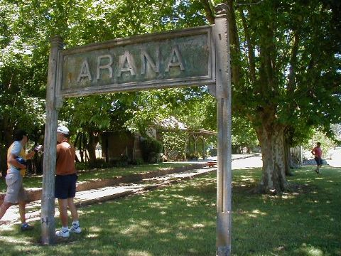

Conociendo la historia
Estacion Arana
- Siglo XIX
- Comienzos del siglo XX
- Crisis esconomica de los 2000
- Cooperativismo
En sus comienzos, alreddedor de 1898, la estacion era usada por los trenes de carga que llegaban desde localidades cercanas.
Tuvo su apogeo en la decada de 1950 cuando la ciudad de La Plata era la cuna de la actividad economica de la Pcia. de Buenos Aires.
Con la hiperinflacion y la baja de la industria local la estacion quedo en desuso y debio cerrar.
En el año 2017 reabrio su actividad gracias al impulso de un grupo de vecinos que quiso revalorizar la zona.